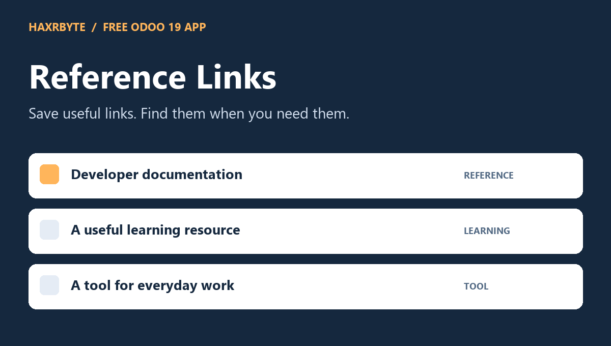
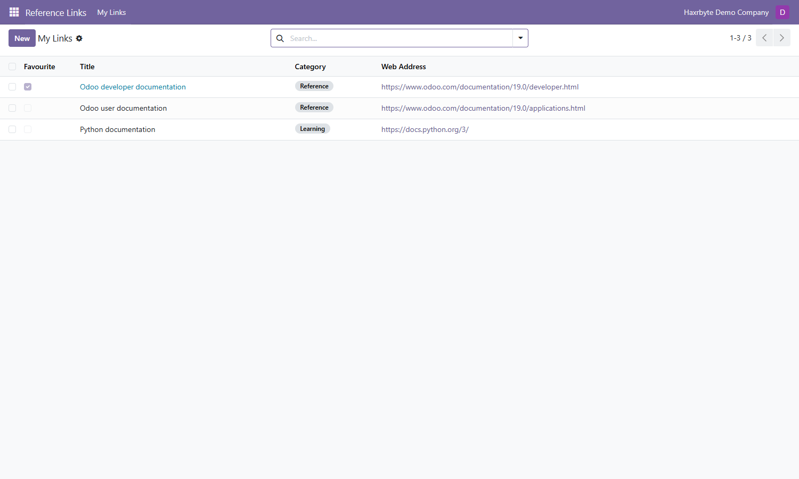
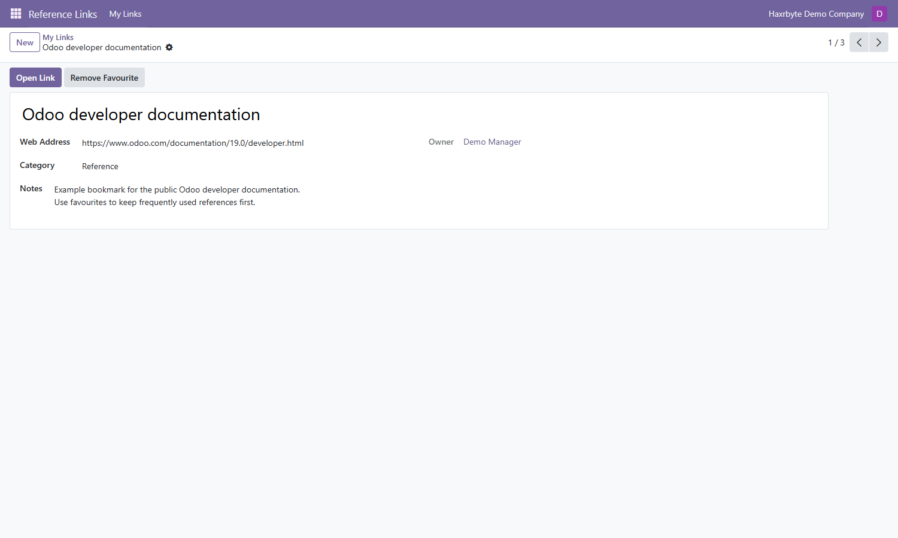

Reference Links
A free personal bookmark app by Haxrbyte for Odoo 19.

A small reference library, inside Odoo
- Save web addresses with a title, category and notes.
- Choose Reference, Learning or Tool categories.
- Mark favourites to keep useful links first.
- Search titles, addresses and notes; filter favourites or group by category.
- Open a saved link in a new browser tab.
- Archive older bookmarks and restore them later.
- Each internal user sees their own links in allowed companies.
Get started
- Install Reference Links.
- Open Reference Links > My Links > New.
- Enter a title and a full http:// or https:// address, then save.
- Click Add Favourite or Open Link.
Inside the app
My Links

A saved reference

Requirements
Odoo 19 Community or Enterprise. Requires only base. Install on a self-hosted server or Odoo.sh; standard Odoo Online cannot load custom Python addons.
Scope and privacy
Personal bookmarks only. No sharing, automatic URL checks, preview generation, browser synchronization or external integrations are included. The server does not fetch saved addresses. Open Link visits the saved website in your browser. Bookmarks belong to their creator; Odoo superuser administration retains normal access. No activation key is required.
Support
alimran689@gmail.com